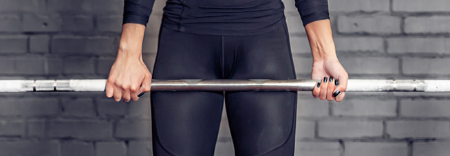

GUIDE TO
DEADLIFT
DECEMBER 8, 2021 - AARON DAYRIT
The deadlift is one of the big three compound movements that train multiple muscles at a time. This back exercise is one of the most popular, especially when focusing on powerlifting. The problem is it's a very difficult exercise to perform effectively for the most benefit. Doing it wrong can lead to severe injury.
Recommended Grips
Pronated (Overhand)
The pronated grip is when both hands are in an overhand position. Both hands will be of equal distance from the bar. This grip is the most beginner recommended.
-Pronated grip
Mixed
The mixed grip is when one hand is pronated (overhand), and the other is supinated (underhand). Place your supinated hand slightly farther on the bar compared to the other. Due to the increase of grip strength, this is the next progression from the pronated grip.
-Mixed grip
Posture
- Start with your feet shoulder-width apart.
- Bend down as much as possible with the back. Try to hit around 90-degree angle with the back.
- Bend the legs slightly to reach the bar.
- Grip the bar, and use the indications to place your hands comfortably. They should be on the outside of your legs.
- Move the to have it slightly past your knees and not make contact.
- 6. Focus on tightening your back and puffing your chest outwards. Keep the spine curving inwards, not outwards.
Motion
- Grip the bar strong to keep it moving with you.
- Move your upper body by using your hips and legs. This should look like you're thrusting through the air. Try to keep the tightness in your back and chest.
- Squeeze the gluts once you've reached the top of the motion.
- Reverse the motion.
Just like that, you've put all the moving parts of the deadlift into action! Don't sweat if you didn't get in on the first try. Mastering this exercise is difficult, especially due to back issues. Use the mirror to your advantage. If it doesn't look right, change it.